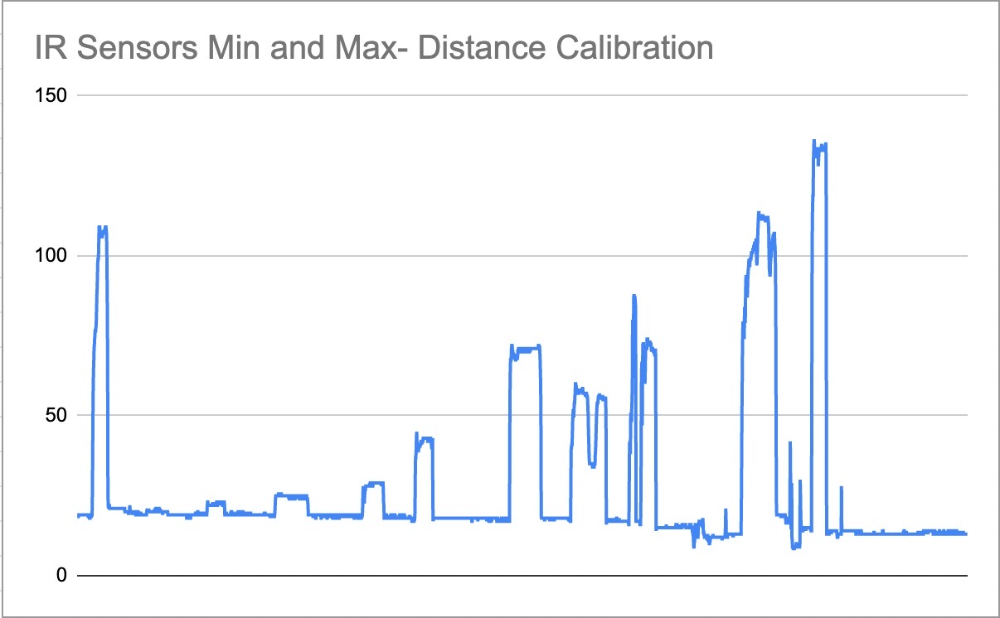

# Week 6: Electronic Input Devices
##A. IR Transmit-Recieve:
I used 1K resistors to build the following circuit:
<img src="IMG_3272.jpeg" alt="circuitdiagram" style="width:650px;height:530.5px;">
<img src="IMG_6021.JPG" alt="circuit" style="width:276px;height:200px;">
<img src="IMG_6020.JPG" alt="circuit" style="width:267px;height:200px;">
<img src="IMG_6025.JPG" alt="circuit" style="width:267px;height:200px;">
</br></br>
####Resultant Values: </br>
<img src="IRSensorMain.jpeg" alt="normal graph" style="width:569px;height:353px;">
Min = 3</br>
Max = 32
</br>
</br>
I can control the range based one the amount of voltage I provide the sensor and the resistors I use in the circuit.
</br>
</br>
####Lowering the voltage:
- going from 5V to 3.3V
- leads to a smaller range
</br>
</br>
Min = 3 </br>
Max = 18
<img src="IRSensorLessV.jpeg" alt="less V graph" style="width:569px;height:353px;">
####Changing Resistors:
**Didn't have enough to do this part, will complete in lab
####Code:
Here is all the code used for this sensor:
<pre><code class="language-arduino">
void setup() {
Serial.begin(9600);
pinMode(A0, INPUT); // set A0 as the input pin
}
void loop() {
int a=analogRead(A0); // read the values from the IR reciever
Serial.println(a); // send them to the serial monitor
delay(100); // wait in between printings
}
</code></pre>
####Relating Distances to Values Recieved from Sensor:
There were new ranges when I set up the circuit again (despite it being the exact same circuit- likely it is due to the changes in environment), so here they are to put the results of the calibration is consistent.

Min = 9
Max = 136
Distance-Sensor Values:
<table>
<tr>
<th>Distance (cm)</th>
<th>Sensor Value</th>
</tr>
<tr>
<td>>=30</td>
<td><=25</td>
</tr>
<tr>
<td>25</td>
<td>25-30</td>
</tr>
<tr>
<td>20</td>
<td>30-40</td>
</tr>
<tr>
<td>15</td>
<td>40-55</td>
</tr>
<tr>
<td>10</td>
<td>55-75</td>
</tr>
<tr>
<td>5</td>
<td>75-100</td>
</tr>
<tr>
<td>0</td>
<td>100-140</td>
</tr>
</table>
Code (to output as distances as opposed to random numbers):
<pre><code class="language-arduino">
void setup() {
Serial.begin(9600);
pinMode(A0, INPUT);
}
void loop() {
int a=analogRead(A0);
if (a <= 25 ){
Serial.println("No obstacle");
}
else if (25 &lt a &lt 30) {
Serial.println("~25 cm");
}
else if (30<a<40) {
Serial.println("~20 cm");
}
else if (40<a<55) {
Serial.println("~15 cm");
}
else if (55<a<75) {
Serial.println("~10 cm");
}
else if (75<a<100) {
Serial.println("~5 cm");
}
else if (100<a<140) {
Serial.println("0 cm");
}
delay(100);
}
</code></pre>
##B. Hand-Crafted Sensor:
###Capacitative Sensor:
I used 10K resistors to build the following circuit:
<img src="IMG_3270.jpeg" alt="circuitdiagram" style="width:541x;height:530.5px;">
<img src="IMG_5989.JPG" alt="circuit" style="width:265px;height:200px;">
<img src="IMG_5988.JPG" alt="circuit" style="width:180px;height:200px;">
</br></br>
####Resultant Values: </br>
<img src="CapactitativeSensor.jpeg" alt="normal graph" style="width:569px;height:353px;">
Min = -11</br>
Max = 650
</br>
</br>
I can control the range based one the amount of voltage I provide the sensor and the resistors I use in the circuit.
</br>
</br>
####Lowering the voltage:
- going from 5V to 3.3V
- leads to a greater range
</br>
</br>
Min = -4 </br>
Max = 1316
<img src="LoweredVoltage.jpeg" alt="lowered voltage" style="width:569px;height:353px;">
####Changing resistors:
- Going from 10K to 1K
- Led to a smaller range
</br>
</br>
Min = -17 </br>
Max = 109
<img src="1KResistors.jpeg" alt="changed resistance" style="width:569px;height:353px;">
####Code:
I used the tx-rx code from the class website without modifying it, as that was not required for this assignment.
However, I do intend on using capacitative sensors in my final project, so my ideas about how to use the sensors creatively can be found [there](../13_Final_Project/index.html).
[home](../index.html).